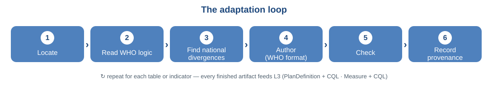
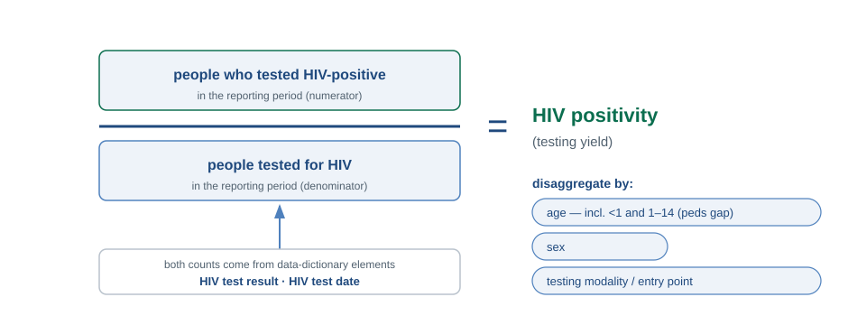

WHO HIV DAK → Ethiopia · authored in Annex C (indicators & performance metrics)
INDICATOR

The 6 steps
Locate & check computable. In Annex A, filter by Linkages to aggregate indicators. Numerator and denominator must come from routine data elements — if it needs a survey or external source, STOP (not a DAK indicator).
Read the WHO logic. The numerator and denominator definitions, and which data elements they use.
Find national divergences. Disaggregations and the exact national definitions of the counts. [confirm: ETH]
Author. Fill the Annex C template fields (format →).
Check. Numerator & denominator come only from Annex A elements; reconcile against a known total (e.g. last quarter).
Record provenance. Divergence from the WHO definition + national reference; track the version.
Worked shape — HIV testing positivity

Format (Annex C)
short name · definition · category · what it measures · rationale
numerator definition + calculation
denominator definition + calculation
disaggregation · reference (+ DAK ID, SI ref)
Pattern: COUNT of clients where [element]=value AND [date] in period
Don't break it
Not computable from routine DAK data (survey / supply / multi-source) — measured elsewhere, not authored as DAK logic: condoms distributed, needles/syringes, condom use, KP know-status, KP on ART
Every element must already exist in Annex A
Changed a DD element? Update every linked indicator (Annex A Linkage columns)
Mind operator precedence; keep population names consistent